10 Best Local Restaurants in Hyderabad
Barbeque Nation
Hyderabad’s
Barbeque Nation offers a fun and engaging dining experience. A dinner
here starts with a pre-fixed menu of five barbecued starters, which are
the real draw of all the Barbeque Nation outlets. Each table is
equipped with a grill that guests can use to keep their starters warm
or glaze with the accompanying marinades and sauces. All tables also
have a little flag: the alert service keeps the starters coming until
the flag is up. If you wish to take a break or proceed to the main
courses, signal this by folding the flag down. The extensive spread of
dishes offered at Barbeque Nation is influenced by international
cuisine, but deeply founded on India’s national fare.
Barbeque Nation, Ground Floor, ANR Centre, Plot No.6-3-249/5/1, Road No.1, Banjara Hills, Hyderabad, India, +91 40 6060 0000
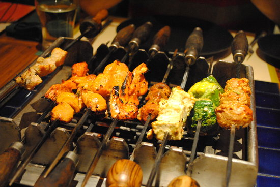
Paradise Restaurant
With
six outlets throughout the city, Paradise is a food empire not limited
to Hyderabad specializing in Hyderabadi, Indian and Chinese delicacies.
The branches range from large spaces in pre-established compounds to
enormous venues comprising several different eateries under the same
roof – quite the progress for a little cafe that first opened in 1953
to serve tea and a few snacks. The secret to Paradise’s wild success is
the ridiculously good biryanis, the best in town by general consensus.
One of the most frequented Paradise spots is the food court located in
the district of Secunderabad. Here, a multi-level, modern palace hosts
a cafe, a bakery, an al fresco restaurant on the roof, another one with
seating on the street level patio, and the acclaimed Persis Gold
restaurant.
Paradise Food Court, Mahatma Gandhi Rd, Sappu Bagh
Apaprtment, Jogani, Kalasiguda, Secunderabad, Hyderabad, India, +91 40
6631 3721
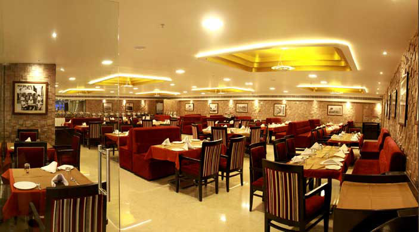
Bawarchi
If
you’re too far from a Paradise branch, but desperately craving a
delicious, well-cooked biryani, look for a Bawarchi restaurant instead.
Bawarchi is another Hyderabad chain of restaurants that locals love and
flock to for some of this ubiquitous, rice-based staple. Several
variants of biryani are up for grabs, including a vegetarian option,
but in the most popular recipe the basmati rice is seasoned with
succulent bits of marinated mutton meat. Besides biryani, Bawarchi
serves delectable, traditional Asian fare spanning meat dishes,
noodles, fried rice and kebabs.
Bawarchi Restaurant, Plot No 66, Rtc Cross Road, Opp Sandhya Theater, Chikkadpally, Hyderabad, India, +91 40 2763 4490
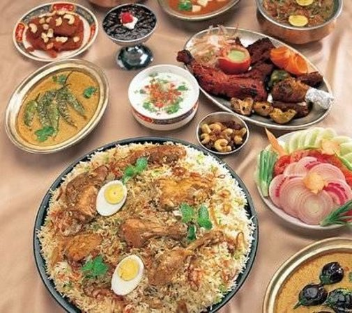
Chutneys
In
India and the entire South Asia, chutneys are available in an
incredible number of variants, consisting of a dip obtained from a
combination of spices, vegetables and fruits. These traditional
delights give the name to Hyderabad’s Chutneys, a famed, local set of
restaurants serving scrumptious, traditional South Indian food,
including a signature selection of six different type of chutneys. Here
you can also try other yummy treats courtesy of South India like dosas,
idlis and pesarattus – three different type of wraps, all equally
delicious. Alternatively, join Chutneys for breakfast and try upma, a
favorite staple similar to porridge.
Chutneys, Plot No. 3-6-111/8, 1st Floor, Far East Plaza, Himayath Nagar, Hyderabad, India, +91 40 3048 8484
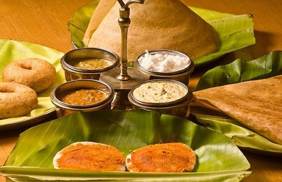
Dakshin
Hyderabad’s
regional cuisine features a stronger emphasis on fish and seafood than
in the country’s northern regions. Hyderabad’s restaurant Dakshin, part
of the city’s ITC Hotel, specializes in South Indian specialties and
reflects the prominence of sea-inspired dishes through a tantalizing
variety of fish-based treats; but the house’s menu lists many other
delectable delicacies of the South, including the mouth-watering
traditional Kerala stew. Dakshin’s chefs surprise patrons with
personal, creative touches that throw new light – and taste – on the
staples they eat every day.
Hotel ITC Kakatiya, 6-3-1187, Greenlands Road, Begumpet, Hyderabad, India, +91 40 2340 0132
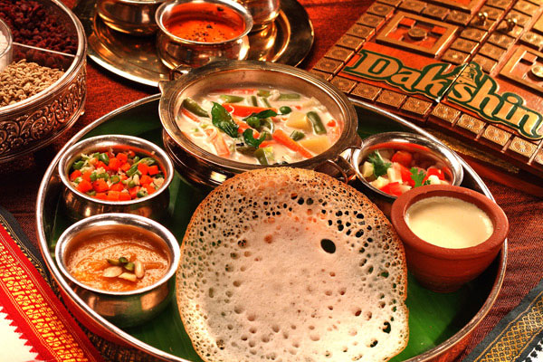
Minerva Coffee Shop
Minerva
Coffee Shop has been part of Hyderabad’s dining scene for many years
now. The restaurant has a solid fan base of foodies that thoroughly
enjoy the scrumptious, authentic dishes of Indian cuisine expertly
prepared by the kitchen. In fact, Minerva provides all the highlights
of both North and South Indian cooking, which can be quite different
from each other. Open all day-round from breakfast time to dinner, this
casual haunt has one of its major draws in South India’s tiffins, a
collective name used to describe an array of inviting snack pastries
like the dosas or the idlis.
Minerva Coffee Shop, 6-3-1110,Ground Floor, Amrutha Mall, Raj Bhavan Road Somajiguda, Hyderabad, India, +91 40 2341 5910
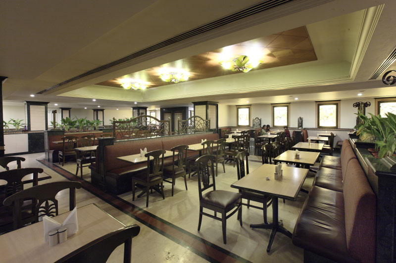
Gufaa
Choose
Gufaa for an unconventional dining experience in Hyderabad. The themed
restaurant’s rocky walls are designed to resemble the inside of a cave.
Sculptures of elephant and tiger heads are hung on the walls, plant
roots and branches creep up the rocks and a large mural mimics ancient
man’s rock drawings, as dim lighting plunges the restaurant into half
darkness. Sit in one of the bamboo chairs with zebra-skin cushions and
enjoy a meal of tasty Indian fare.
Gufaa Ohri’s Cuisine Court, Door
No. 5-9-30/16-20, Ohri’s Cuisine Court, Opposite Gandhi Medical
College, Basheer Bagh, Hyderabad, India, +91 40 2329 8811
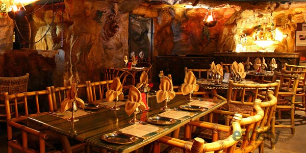
Kangan
Hosted
inside Hyderabad’s upmarket Westin hotel, restaurant Kangan is firmly
driven by chef Rakesh Singh. Chef Singh delivers a delectable menu of
Indian specialties which fully celebrate the country’s distinctive
aromas and spices. In particular, Kangan is a recommended choice to
experience the tastes of Northwestern India’s gastronomy, influenced by
the Peshawari tradition hailing from the neighboring Pakistan. The
beverage department is another forte of Kangan’s. The restaurant boasts
a fine selection of Indian teas typical of Hyderabad, as well as an
outstanding gamut of single malt Scotches.
Kangan, Raheja Mindspace, Mindspace, Hitech City, Hyderabad, India, +91 40 6767 6838
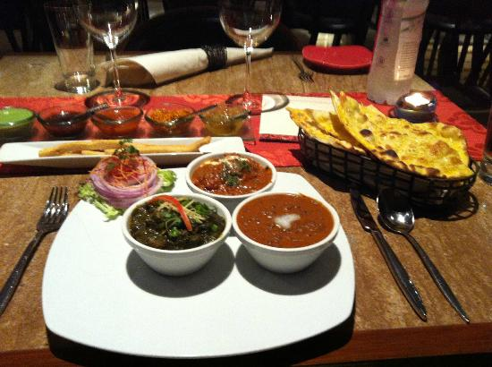
Olive
Stepping
into irresistibly charming restaurant Olive Bistro, you are made to
wonder whether you’re still in Hyderabad or if you have been magically
teleported to the Greek island of Santorini. Beautifully decorated, the
bistro’s whitewashed walls are nicely complemented by faux vaults,
tablecloths in floral patterns and pastel tints, and a stunning tile
floor. The outdoor patio is simply magical, complemented by garden
furniture and offering panoramic views of the freshwater Durgam Cheruvu
lake ahead. A gem of a restaurant in a lucky location, come to Olive
Bistro to experience exquisite Mediterranean fare.
Olive Bistro, Road No 46 Jubilee Hills , At Kona’s Durgam Cheruvu, Hyderabad, India, +91 92 48 912347
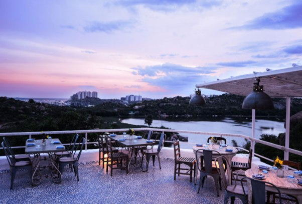 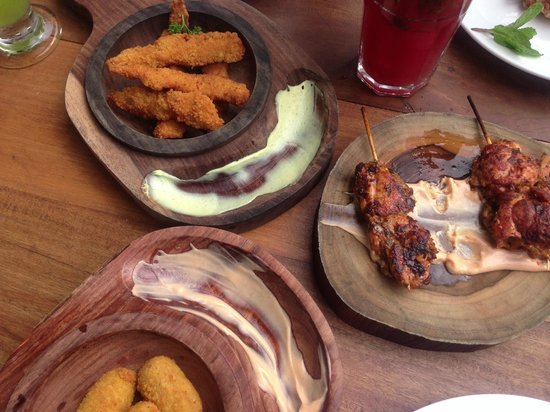
Sahib Sindh Sultan
The
first train to ever take to the rails in India took off from Bori
Bunder in 1853, during the British Raj. Hyderabad’s restaurant Sahib
Sindh Sultan celebrates that historical episode and era in a truly
unique way. The venue is set up like a train station: on one side,
plenty of tables are arranged on what would be the station’s platform;
on the other, extra seating is available in the wagons of a pretend
train that carries the name of the restaurant spelled in gold
lettering. Elegant decor, silverware, silk tapestries and exquisite
Anglo-Indian dishes complete a mesmerizing, must-visit restaurant in
Hyderabad.
Sahib Sindh Sultan, City Center, V Floor, Road Number 1,
Road Number 10, Zehra Nagar, Banjara Hills, Hyderabad, India, +91 40
6668 3337
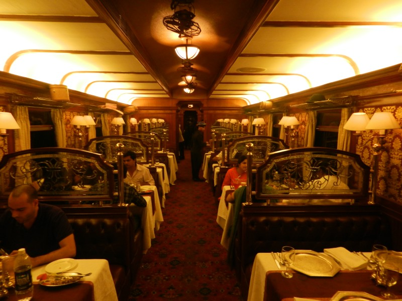